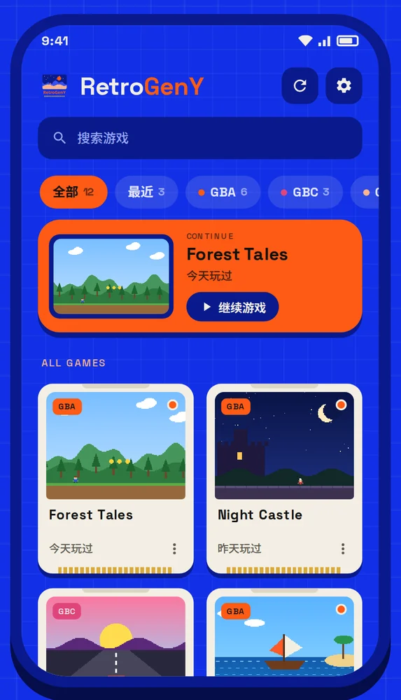
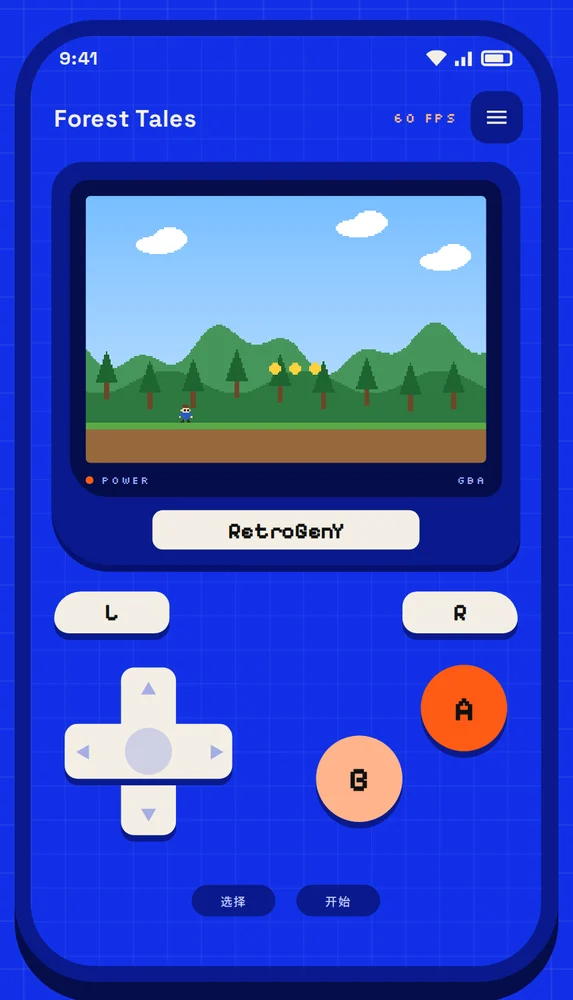
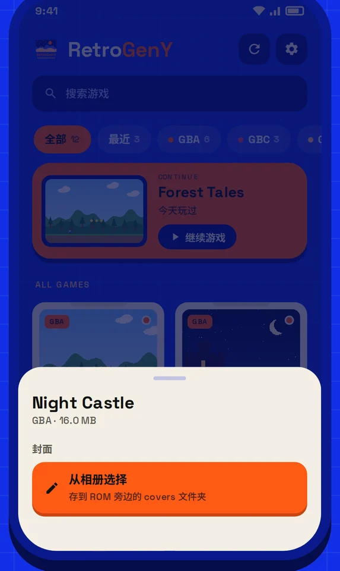

联机：拉上朋友一起玩
几台手机连起来，对战、换宝可梦、一起跑马车都没问题，玩法和原来的卡带联机一模一样。
- GB/GBC 两人联机，GBA 最多四人
- 同一个 Wi-Fi、手机热点、蓝牙、C 口数据线都能连
- 每台手机一根不同颜色的线，点一下就接上
- 网络卡的时候开「镜像联机」，照样流畅

RetroGenY 是一款安卓上的 GBA、GBC、GB 模拟器。连同一个 Wi-Fi、开个蓝牙，或者拿根数据线，就能和朋友对战、换宝可梦、一起跑马车。GBA 游戏最多四个人一起玩。


按键大，画面清楚，想存档随手就存。


几台手机连起来，对战、换宝可梦、一起跑马车都没问题，玩法和原来的卡带联机一模一样。
这是我们自己设计的金手指格式。存档一换就跑掉的数据、加密过的金钱、一整个背包，普通金手指搞不定，扩展码都能改。

金手指库里没有？那就自己找。小窗口浮在游戏上，边玩边搜，找到了就能做成金手指，换存档也不会失效。

自带 1700 多个游戏的金手指，进游戏就能直接选。GameShark、Action Replay、CodeBreaker 的码也能直接粘贴进来用。金手指说明
游戏放哪你说了算。子文件夹、封面、存档都留在原地，换手机整个拷过去就能接着玩。应用本身不带游戏，也不会帮你下载游戏。快速上手
随时存随时读，每个存档都有缩略图，读错了还能撤回。按住倒带键，游戏就往回倒。功能一览
蓝牙、有线手柄和键盘都能自己设按键。卡带震动、掌机小喇叭的音色、液晶屏的拖影，这些原机的小特点也都能还原。功能一览
连不上、找不到房间、提示版本不一致……常见情况都在这里。常见问题